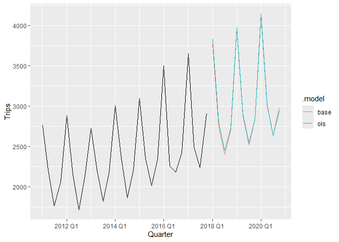
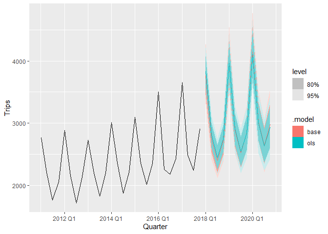

The R package icomb provides tools for implementing the information combination approach to forecasting hierarchical time series proposed by Nguyen, Vahid and Wickramasuriya (2025).
It offers tools to construct and combine forecasts based on different information sets, enabling improved forecast accuracy within hierarchical and grouped time series structures.
Installation
You can install the stable version on CRAN:
install.packages("icomb")You can install the development version from GitHub
# install.packages("pak")
pak::pak("ShanikaLW/icomb")Example
library(fable)
library(fabletools)
library(tsibble)
library(dplyr)
library(lubridate)
library(icomb)
library(ggtime)
tourism_hts <- tourism |>
aggregate_key(State * Purpose,
Trips = sum(Trips))
fit <- tourism_hts |>
model(base = ETS(Trips)) |>
reconcile(ols = min_trace(base, method = "ols"),
icomb = icomb(base, train_size = 75))
fit
#> # A mable: 45 x 5
#> # Key: State, Purpose [45]
#> State Purpose base ols icomb
#> <chr*> <chr*> <model> <model> <mdl_cmb_>
#> 1 ACT Business <ETS(M,N,M)> <ETS(M,N,M)> <ETS(M,N,M)>
#> 2 ACT Holiday <ETS(M,N,A)> <ETS(M,N,A)> <ETS(M,N,A)>
#> 3 ACT Other <ETS(M,N,N)> <ETS(M,N,N)> <ETS(M,N,N)>
#> 4 ACT Visiting <ETS(M,N,N)> <ETS(M,N,N)> <ETS(M,N,N)>
#> 5 ACT <aggregated> <ETS(M,A,N)> <ETS(M,A,N)> <ETS(M,A,N)>
#> 6 New South Wales Business <ETS(M,N,A)> <ETS(M,N,A)> <ETS(M,N,A)>
#> 7 New South Wales Holiday <ETS(M,N,A)> <ETS(M,N,A)> <ETS(M,N,A)>
#> 8 New South Wales Other <ETS(A,N,N)> <ETS(A,N,N)> <ETS(A,N,N)>
#> 9 New South Wales Visiting <ETS(A,N,A)> <ETS(A,N,A)> <ETS(A,N,A)>
#> 10 New South Wales <aggregated> <ETS(A,N,A)> <ETS(A,N,A)> <ETS(A,N,A)>
#> # ℹ 35 more rows
fit |>
forecast(h = "3 years") |>
filter(Purpose == "Holiday", State == "Victoria") |>
autoplot(filter(tourism_hts, Purpose == "Holiday",
State == "Victoria", year(Quarter) > 2010), level = NULL)
We can compute probabilistic forecasts
fit |>
forecast(h = "3 years", bootstrap = TRUE, times = 1000) |>
filter(Purpose == "Holiday", State == "Victoria") |>
autoplot(filter(tourism_hts, Purpose == "Holiday",
State == "Victoria", year(Quarter) > 2010))
This workflow can be parallelized to improve performance using the future package. By specifying a parallelization plan via future::plan() (e.g., multisession or multicore), users can control how computations are distributed across available workers. This allows the cross-validation procedure in the information combination approach to run in parallel without modifying the core code, while remaining flexible to different computing environments. If no plan is set, the default sequential strategy is used, meaning computations are performed one after another with no parallelization.
library(future)
plan(multisession, workers = 2)
tourism_hts |>
model(base = ETS(Trips)) |>
reconcile(ols = min_trace(base, method = "ols"),
icomb = icomb(base, train_size = 75)) |>
forecast(h = "3 years")
#> # A fable: 1,080 x 6 [1Q]
#> # Key: State, Purpose, .model [90]
#> State Purpose .model Quarter
#> <chr*> <chr*> <chr> <qtr>
#> 1 ACT Business base 2018 Q1
#> 2 ACT Business base 2018 Q2
#> 3 ACT Business base 2018 Q3
#> 4 ACT Business base 2018 Q4
#> 5 ACT Business base 2019 Q1
#> 6 ACT Business base 2019 Q2
#> 7 ACT Business base 2019 Q3
#> 8 ACT Business base 2019 Q4
#> 9 ACT Business base 2020 Q1
#> 10 ACT Business base 2020 Q2
#> # ℹ 1,070 more rows
#> # ℹ 2 more variables: Trips <dist>, .mean <dbl>
plan(sequential)